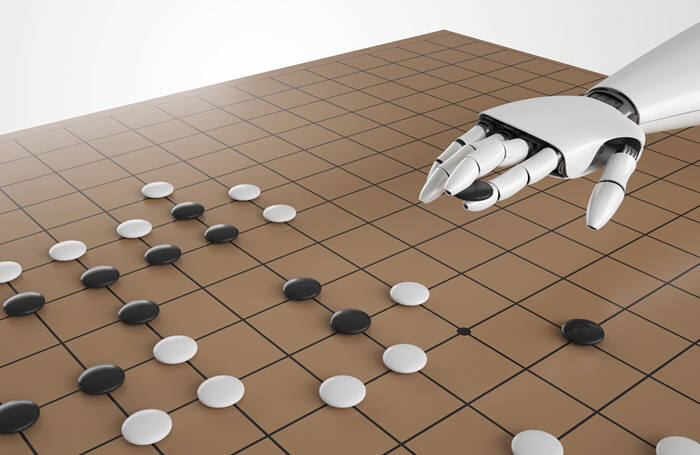

"인공지능 때문에 미래 일자리가 크게 달라진다는데 앞으로 사라질 직업이 많을까요, 아니면 새로 생겨날 직업이 많을까요?" 미래를 주제로 한 강의를 할 때면 빠지지 않는 청소년들의 질문이다. 사실 청소년 뿐 아니라, 모든 사람들이 궁금해하는 주제다.

2016년 3월 이세돌 9단은 인간 대표 자격으로 인공지능 바둑 프로그램 알파고에 맞서는 '세기의 대결'을 펼쳤다. 다섯 판의 승부는 알파고 4승, 이세돌 9단의 1승으로 귀결되며 불안과 희망이 뒤엉킨 결과를 선사했다. 하지만 1승이 선물한 희망마저 불안에 점점 잠식되어갔다. 인공지능의 학습 방법이 사람과 크게 다르다는 게 알려졌기 때문이다. 인공지능은 잠을 자지 않아도 피로를 모르며,
밥 먹는 시간이나 화장실 가는 시간도 필요없다. 더욱이 알파고는 누적된 기보를 통해 학습했지만, 알파고의 업그레이드 버전인 알파제로의 기계학습은 기보는 물론 사람의 도움을 전혀 필요로 하지 않았다. 스스로 기보를 만들어내며 일찍이 인간이 바둑판에서 경험하지 못한 다양한 상황에 완벽하게 대응하는 방법까지 익히며 바둑을 깨쳤다. 알파고가 불과 몇 달 만에 인간의 도움이 필요 없는 알파제로로 진화하며, 인간이 넘볼 수 없는 수준의 바둑을 구현해낸 것이다.